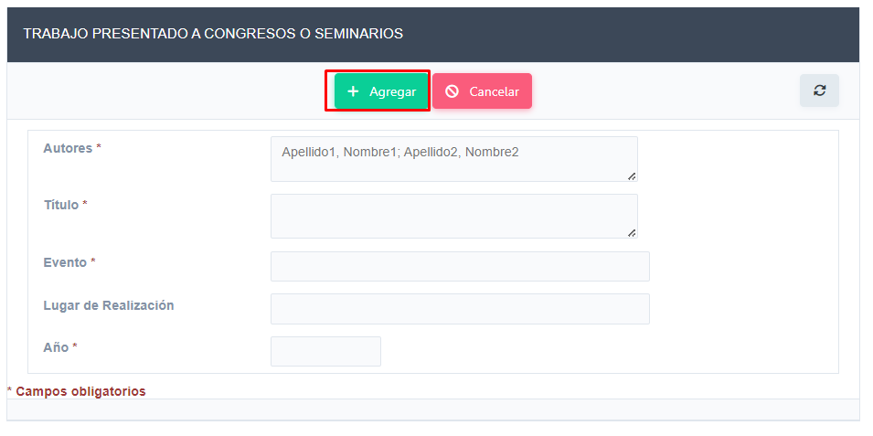

Visualizará las publicaciones en Libros o capítulos de Libros de las que tiene registro la Facultad.
Empleando el botón Nuevo podrá cargar un nuevo registro de su actividad.
Una vez completado hacer clic en el botón Agregar, teniendo presente el llenado de los campos obligatorios.